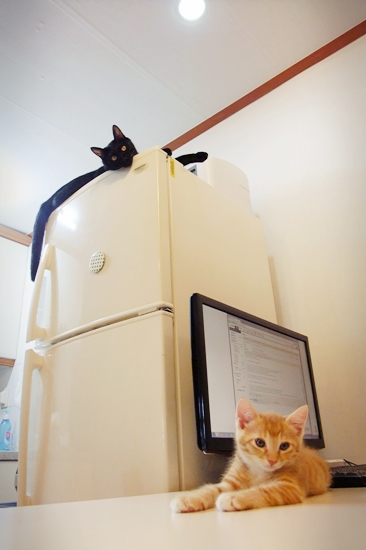
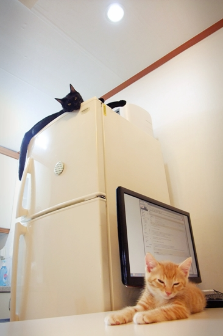

망고가 책상 무간식 등정(간식 냄새의 유혹없이 등정하는 일)에 성공했다.
생후 2개월 반만에 거둔 쾌거이건만, 냉정한 세르파 간장 선생은
책상따위 냉장고에 오르기 위한 베이스캠프에 불과하다며
몸소 냉장고 등정을 시범 보이셨다.
아아... 히딩크적 공복을 동력삼아 더 큰 성취를 독려하시는 아름다운 모습이고녀.

어...어이, 졸지 말고 여길 봐야지;;;